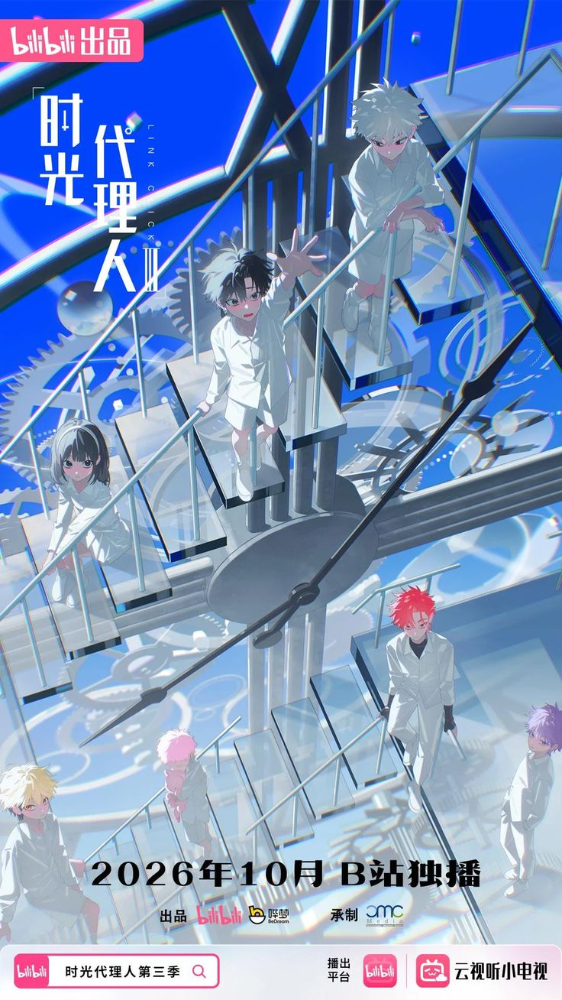

Link click
Thể loại: Tâm lý
Mô tả:
Link Click là truyện hoạt hình Trung Quốc (donghua) thuộc thể loại giật gân,du hành thời gian,tâm lý, xoay quanh hai nhân vật chính Trình Tiểu Thời (Cheng Xiaoshi) và Lục Quang (Lu Guang).
Tóm tắt cốt truyện:
Cheng Xiaoshi và Lu Guang điều hành studio ảnh Khoảnh Khắc Thời Gian và nhận yêu cầu từ
khách hàng để giúp họ giải tỏa những hối tiếc.
Thông qua một bức ảnh do khách hàng cung
cấp, Cheng Xiaoshi có thể du hành ngược thời gian về khoảnh khắc bức ảnh được chụp và
hóa thân thành người chụp ảnh, đồng thời hấp thụ ký ức và cảm xúc của người đó. Cùng lúc
đó, Lu Guang có khả năng theo dõi các sự kiện trong thời gian và giúp Cheng Xiaoshi sống
lại những trải nghiệm của người chụp ảnh. Cả hai làm việc trong điều kiện chỉ có 12 giờ
và một cơ hội duy nhất để du hành thời gian và tìm kiếm điều khách hàng đang tìm kiếm,
đồng thời không làm thay đổi các sự kiện trong quá khứ.
Bình luận
Vui lòng đăng nhập để bình luận.